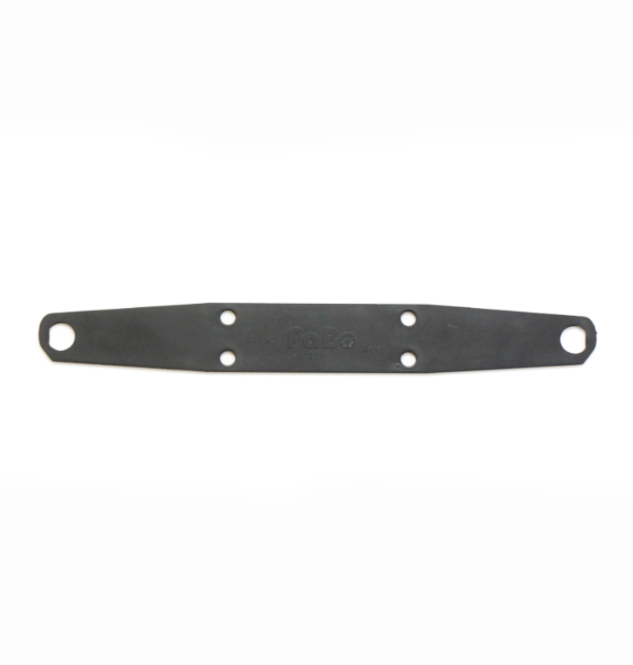
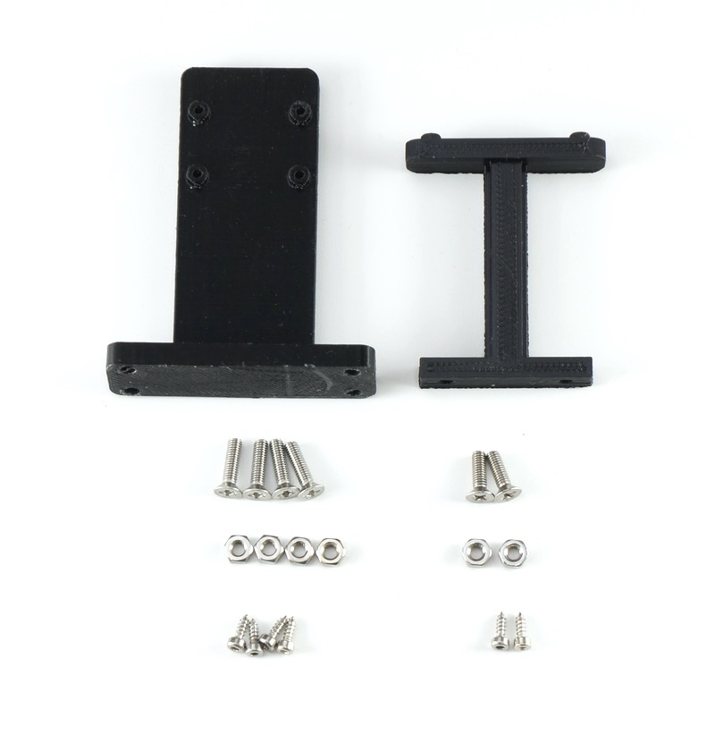
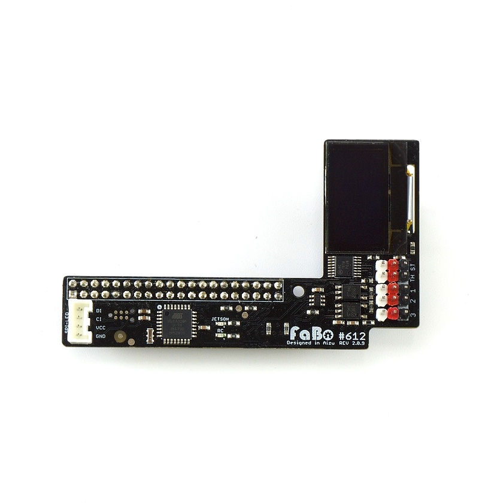
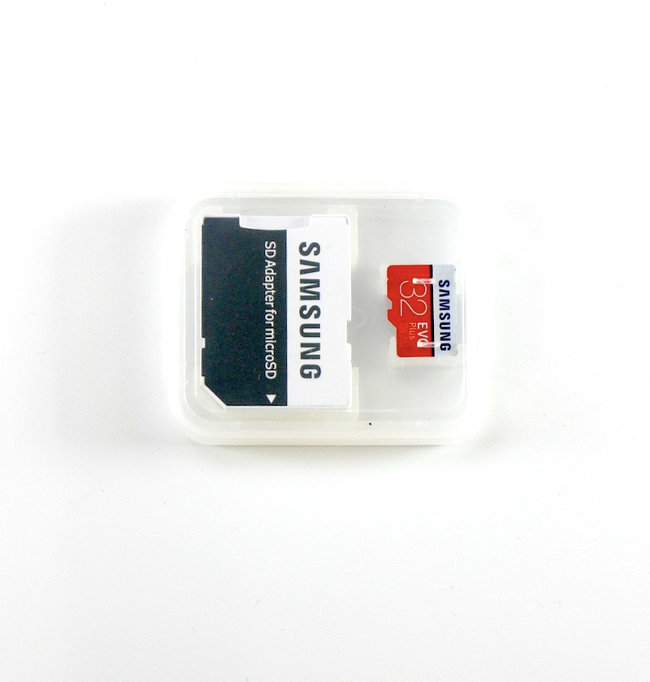
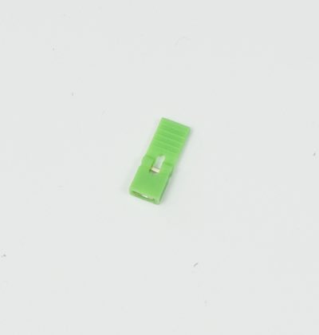
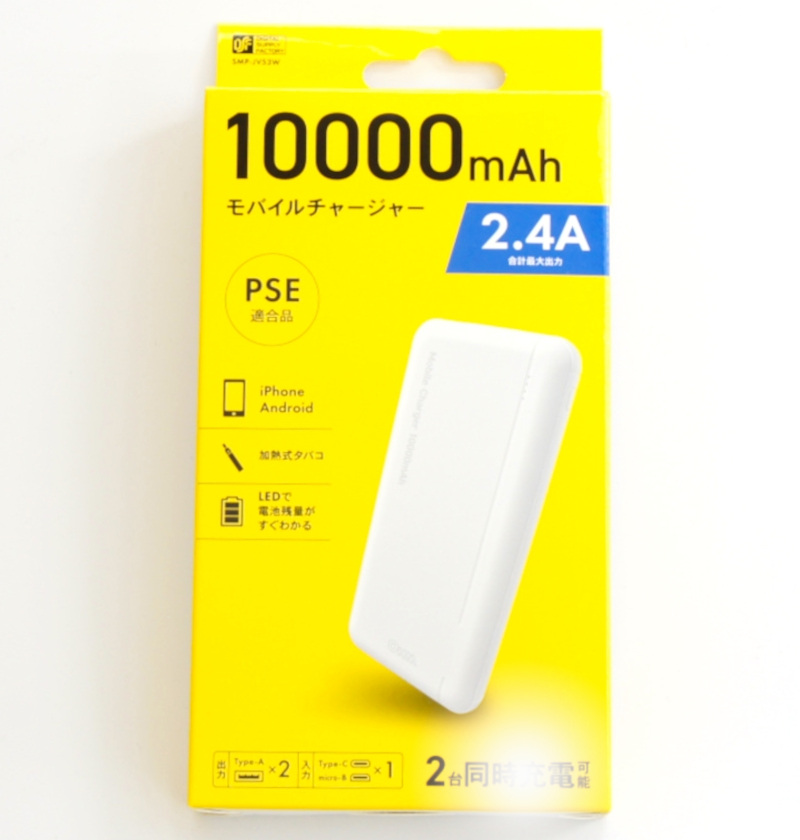

JetRacer Kit Carbon Edition ４GBモデル BOMリスト 前期型 及び 後期型

JetRacer Kit GRスープラボディ装着車
| コード番号 |
|---|
| コード番号：JR1-S-C-C |
| コード番号：JR1-NV-C-C |
※車体レスモデルは、RCカー本体 TT-02 XBプロはありません。
JetRacer Carbon Edition JR1-S-C-C 内容物
| 写真 | 部品 | 個数 |
|---|---|---|
 |
RCカー本体 タミヤ TT-02 XBプロ エキスパートビルド ※完成品 ※タミヤ 1/10RC XB トヨタ GR スープラ または、1/10RC XB トヨタ ガズーレーシングWRT/ヤリス WRCのいずれかになります。 車種は選べません。 |
１セット |
 |
Jetson Nano 開発者キットB-01 ※本体アップデートのため開封済みでございます。ご了承ください。 |
１台 |
 |
CAM026 IMX219-160° ケーブル 150mm ※ケーブルのお色は白または黒となります。 |
１個 |
  |
拡張ボディ カーボンアッパーパネル ※上下いづれかになります。 ＜下側＞モバイルバッテリーSMP-JV53W対応 2022年3月9日出荷以降は下のものになります。 |
１枚 |
 |
拡張ボディ カーボンロワーパネル | １枚 |
   |
Wi-Fi支持パーツ 材質:FR-4 Rev6（上）,Rev5（中）,Rev4（下）のいづれかになります。 |
１枚 |
|  | 拡張ボディ カーボンエディション用カメラマウント・・・1 拡張ボディ カーボンエディション用LEDマウント・・・・1 ※２０２１年６月出荷以前の場合 皿ネジM3×15・・・・4 皿ネジM3×10・・・・2 ナット M3・・・・6 六角穴付きボルトセルフタッピングネジM2×5・・・・6 |
１袋 |
 |
拡張ボディ カーボンエディション用LEDマウント（Rev２） ※２０２１年７月出荷～２０２２年３月までのものはこちらになります。 ボディ取り付け対応品 |
１個 |
 |
拡張ボディ カーボンエディション用LEDマウント（Rev３） ※２０２２年３月９日出荷以降のものはこちらになります。 ボディ取り付け対応品 |
１個 |
| 樹脂六角スペーサー（黒色）M3×18・・・・4 皿ネジM3×10・・・・4 ナット M3・・・・4 |
１袋 | |
 |
樹脂六角スペーサー(白色または黒)M2.6×10・・・・4 皿ネジM2.6×5・・・・4 なべネジM2.6×5・・・・4 |
１袋 |
|  | FaBo #612 コントローラーボード | １枚 |
 |
Color LEDボード | １枚 |
 |
Wi-Fiルーター WMR-433W2 ※ボディカラーはお選びいただくことはできません。 |
１個 |
 |
Intel Dual Bandwireless-AC 8265 Desktop Kit | １個 |
 |
電源用USBケーブル 標準A-DCプラグ（A右向き、DC 2.1mm) 0.2m | １本 |
 |
Wi-Fiルーター用 USBケーブル 標準A-マイクロB（A 右向き、B左向き）0.25m | １本 |
 |
転送用USBケーブル 3m 標準A-マイクロB | １本 |
 |
RCケーブル3ピン メスプラグ 3本 | １セット |
 |
FaBo 4ピンケーブル 0.15m | １本 |
 |
LANケーブル 0.15m | １本 |
 |
マイクロSDカード(64GB),SDカードケース サンディスク エクストリームプロ ２０２１年７月出荷分より |
１個 |
|  | マイクロSDカード(32GB),SDカードケース サムスン EVO ２０２１年６月出荷までのもの |
１個 |
 |
DCファン FD401B1H-AP00 DC5V,0.16A | １個 |
 |
CPUファン取り付けジグ | １個 |
 |
ファン固定ネジ M2.5×14・・・・4 ナットM2.5・・・・5(予備１) |
１袋 |
 |
六角棒レンチ 1.5 | １本 |
 |
両面テープ | ３枚 |
 |
プラスドライバー +2×100 | １本 |
 |
精密ドライバー P柄 | １本 |
 |
ナットドライバー 5.5 | １本 |
 |
精密ドライバーセット ED−20 | １セット |
|  | Jumperピン | １個 |
 |
スパナ ８平スパナ |
１本 |
 |
結束バンド | １本 |
|  | モバイルバッテリー モバイルバッテリーはこちらまたは、下記のモバイルバッテリーとなります。 モバイルチャージャー10000 オーム電機 SMP-JV53W/05-1196 定格入力 DC5V/2.0A(Type-C/miro-B) 定格出力 DC5V/2.4V(Type-A*2ポート） 定格容量 DC5V/6300mAh 繰り返し充電回数 約500回 充電ケーブル micro-B 約15cm ※充電にはType-Cのケーブルを使用します。本キットには付属しませんのでお客様でご準備願います。 ※くわしい取り扱いに関しては取扱説明書をご覧ください。 ２０２２年３月９日出荷分より |
１個 |
 |
モバイルバッテリー （BI-B3） ※新パッケージの場合 ２０２２年２月までの出荷分 |
１個 |
 |
モバイルバッテリー （BI-B3） ※旧パッケージの場合 ２０２２年２月までの出荷分 |
１個 |
 |
単三アルカリ乾電池（プロポに使用） ※写真と異なる場合がございます。 |
4本 |
※ボディに穴をあけるのに、カッターナイフ等が必要となります。お客様でご準備お願いいたします。
※開封後はすぐ欠品がないかご確認お願いいたします。もし欠品がございましたら、こちらまでご連絡ください。